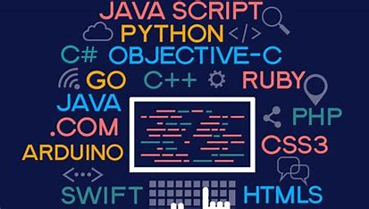

Basic Programming Languages
What is Programming Languages ?
A programming language is a set of instructions and syntax used to create software programs. Some of the key features of programming languages include:
A programming language is a formal language that specifies a set of instructions for a computer to perform specific tasks. It’s used to write software programs and applications, and to control and manipulate computer systems. There are many different programming languages, each with its own syntax, structure, and set of commands. Some of the most commonly used programming languages include Java, Python, C++, JavaScript, and C#. The choice of programming language depends on the specific requirements of a project, including the platform being used, the intended audience, and the desired outcome. Programming languages continue to evolve and change over time, with new languages being developed and older ones being updated to meet changing needs.
Which Programminig language you should learn first ?
Still, it basically comes down to what you’re looking to achieve. Here, we’ll explore some of the most popular languages (and their uses) so that you’ll have a better idea of which one is right for you. Here are some basic programming languages you shouls start first.
We are going to study Basic Programming languages here and we will provide you the source regarding frontend development.
Let us Learn Basic Programming languages !!
1.C
What is C language ?
C is a general-purpose programming language that is extremely popular, simple, and flexible to use. It is a structured programming language that is machine-independent and extensively used to write various applications, Operating Systems like Windows, and many other complex programs like Oracle database, Git, Python
It is said that ‘C’ is a god’s programming language. One can say, C is a base for the programming. If you know ‘C,’ you can easily grasp the knowledge of the other programming languages that uses the concept of ‘C’ It is essential to have a background in computer memory mechanisms because it is an important aspect when dealing with the C programming language.
So let us start the full C language course in one short with the Aimers !!
We are sure that you will learn complete C Language from here and will able to create any programm of C language .
*Note: if you are using Mobile then use always desktop site for better experience.
2.C++
What is C++ language ?
C++ is a high-level, general-purpose programming language designed for system and application programming. It was developed by Bjarne Stroustrup at Bell Labs in 1983 as an extension of the C programming language. C++ is an object-oriented, multi-paradigm language that supports procedural, functional, and generic programming styles. One of the key features of C++ is its ability to support low-level, system-level programming, making it suitable for developing operating systems, device drivers, and other system software. At the same time, C++ also provides a rich set of libraries and features for high-level application programming, making it a popular choice for developing desktop applications, video games, and other complex applications.
So let us start the full C++ language course in one short with the Aimers !!
We are sure that you will learn complete C Language from here and will able to create any programm of C language .
*Note: if you are using Mobile then use always desktop site for better experience.
3.SQL
What is SQL ?
Structured Query Language (SQL) (pronounced S-Q-L; historically "sequel")[4][5] is a domain-specific language used to manage data, especially in a relational database management system (RDBMS). It is particularly useful in handling structured data, i.e., data incorporating relations among entities and variables. Introduced in the 1970s, SQL offered two main advantages over older read–write APIs such as ISAM or VSAM. Firstly, it introduced the concept of accessing many records with one single command. Secondly, it eliminates the need to specify how to reach a record, i.e., with or without an index. Originally based upon relational algebra and tuple relational calculus, SQL consists of many types of statements,[6] which may be informally classed as sublanguages, commonly: Data query Language (DQL), Data Definition Language (DDL), Data Control Language (DCL), and Data Manipulation Language (DML).[7]
So let us start the full SQL course in one short with the Aimers !!
We are sure that you will learn complete SQL from here and will able to create any programm of SQL .
*Note: if you are using Mobile then use always desktop site for better experience.
4.PYTHON
What is PYTHON ?
Python is a high-level, general-purpose, and very popular programming language. Python programming language (latest Python 3) is being used in web development, and Machine Learning applications, along with all cutting-edge technology in Software Industry. Python language is being used by almost all tech-giant companies like – Google, Amazon, Facebook, Instagram, Dropbox, Uber… etc. This Programming Language Python Tutorial is very well suited for beginners and also for experienced programmers. This specially designed free Python tutorial will help you learn Python programming most efficiently, with all topics from basics to advanced (like Web-scraping, Django, Learning, etc.) with examples.
So let us start the full PYTHON course in one short with the Aimers !!
We are sure that you will learn complete PYTHON from here and will able to create any programm of PYTHON language .
*Note: if you are using Mobile then use always desktop site for better experience.
5.JAVA
What is JAVA ?
Java is a class-based, object-oriented programming language that is designed to have as few implementation dependencies as possible. It is intended to let application developers write once, and run anywhere (WORA), meaning that compiled Java code can run on all platforms that support Java without the need for recompilation. Java was first released in 1995 and is widely used for developing applications for desktop, web, and mobile devices. Java is known for its simplicity, robustness, and security features, making it a popular choice for enterprise-level applications. JAVA was developed by James Gosling at Sun Microsystems Inc in the May 1995 and later acquired by Oracle Corporation. It is a simple programming language. Java makes writing, compiling, and debugging programming easy. It helps to create reusable code and modular programs. Java is a class-based, object-oriented programming language and is designed to have as few implementation dependencies as possible. A general-purpose programming language made for developers to write once run anywhere that is compiled Java code can run on all platforms that support Java. Java applications are compiled to byte code that can run on any Java Virtual Machine. The syntax of Java is similar to c/c++.
So let us start the full JAVA course in one short with the Aimers !!
We are sure that you will learn complete JAVA from here and will able to create any programm of PYTHON language .
*Note: if you are using Mobile then use always desktop site for better experience.
Comments